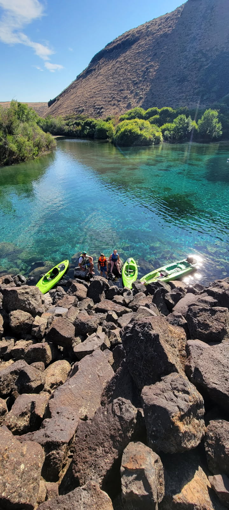

Kayaking in Southern Idaho
One of my favorite things to do is go kayaking with my family and friends. There are a lot of fun places to kayak right here in Southern Idaho. Blue Heart Springs is located near Buhl on the Snake River and is a beautiful ride and suitable even for beginners.
Blue Heart Springs
Watch: Kayaking Video
Short video of a family kayaking trip. Use the controls to play, pause, and adjust the volume.